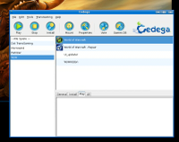

Cedega
Archivierte Anleitung
Dieser Artikel wurde archiviert, da er - oder Teile daraus - nur noch unter einer älteren Ubuntu-Version nutzbar ist. Diese Anleitung wird vom Wiki-Team weder auf Richtigkeit überprüft noch anderweitig gepflegt. Zusätzlich wurde der Artikel für weitere Änderungen gesperrt.
Zum Verständnis dieses Artikels sind folgende Seiten hilfreich:
Cedega ist eine für Spiele optimierte, kommerzielle Variante von Wine, die sich von dem Projekt abgespalten hat, als Wine noch unter einer freien Lizenz ohne Copyleft veröffentlicht wurde. Seitdem wird Wine unter der GNU LGPL veröffentlicht, um zukünftig zu verhindern, dass sich weitere Projekte abspalten, die Verbesserungen nicht mehr in das Wine-Projekt zurückfließen lassen.
Hinweis:
Der Artikel ist insgesamt veraltet. Cedega wird nicht mehr weiterentwickelt. Als Alternativen eignen sich PlayOnLinux oder CrossOver.
Anschaffung¶
Um Cedega nutzen zu können benötigt man einen kostenfreien Account beim GameTree Linux Developer Program  . Anschließend lässt sich die Software kostenfrei herunter laden. Ein Kauf ist nicht mehr nötig.
. Anschließend lässt sich die Software kostenfrei herunter laden. Ein Kauf ist nicht mehr nötig.
Installation¶
Die Installation der aktuellen Version von Cedega unterscheidet sich von der früherer Versionen und läuft zweistufig ab:
zunächst wird das grafische Cedega-Interface mittels eines distributionsabhängigen Paketes installiert (im Falle von Ubuntu ein .deb Paket)
danach wird die eigentliche Cedega-Engine mit einer für alle Distributionen gleichen Datei installiert (Dateiendung *.cpkg)
Man beachte, dass nur die zweite Datei mit der Engine die jeweils aktuelle Versionsnummer trägt. Es reicht, wenn man sich nur die .deb Datei herunterlädt, da Cedega nach dem erstmaligen Start nach Updates suchen wird und dann automatisch die aktuelle Engine herunterladen und installieren kann.
.deb Paket¶
Die .deb-Installationsdatei wird manuell installiert [1]. Nach Abschluss der Installation sollte das grafische Interface von Cedega automatisch starten. Der manuelle Befehl zum Starten des Interfaces lautet
cedega
Engine¶
Beim ersten Start von Cedega wird einem die automatische Suche nach Updates angeboten. Auf diese Weise kann auch die Engine heruntergeladen und installiert werden. Hat man die Engine im .cpkg-Format bereits auf der Festplatte, kann man Cedega den Pfad zu der Datei mitteilen.
Es empfiehlt sich auch, die "Windows Core Fonts" und den "Mozilla Scheduler" durch das Auto-Update zu installieren, ebenso kann man hier die Game Database auf den neuesten Stand bringen.
Eine Suche nach Updates kann man im Cedega-Interface jederzeit im Menü über "Transgaming" und "Check for updates" veranlassen.
Benutzung¶
Installation von Programmen¶
|  |
| © TransGaminc Inc. |
Zunächst sollte die Installations-CD des Spiels eingelegt und eingebunden sein (hierzu bietet Cedega den Button "Mount" an).
Mit einem Klick auf den Button "Install" öffnet man ein Fenster, in dem man aus der Datenbank von Cedega das Spiel auswählt, welches man installieren will. Der Knopf "Detect Game Disk" hilft schon beim Auswählen. Der Rest kann in den meisten Fällen in der Standardeinstellung verbleiben. Sollten besondere Maßnahmen von Nöten sein, um erfolgreich zu installieren, werden die entsprechenden Hinweise schon im Installationsfenster gezeigt, sobald man das Spiel aus der Datenbank ausgewählt hat.
Gleichzeitig mit der Auswahl des Spiels trägt der Installer dann auch die Cedega-Einstellungen so ein, wie sie in den meisten Fällen die beste Performance ergibt. Auf bekannte Möglichkeiten, in Spezialfällen bei schwacher Performance und bei Fehlern die Einstellungen zu verbessern wird, in den Infos über das Spiel ebenfalls hingewiesen.
Start von Programmen¶
Nach der Installation stehen die Programme dann auf der rechten Seite als Symbole zur Verfügung. Entweder per Doppelklick oder nach Auswählen mit dem Klick auf den Button "Play" lassen die Spiele sich dann starten.

- Erstellt mit Inyoka
-
 2004 – 2017 ubuntuusers.de • Einige Rechte vorbehalten
2004 – 2017 ubuntuusers.de • Einige Rechte vorbehalten
Lizenz • Kontakt • Datenschutz • Impressum • Serverstatus -
Serverhousing gespendet von